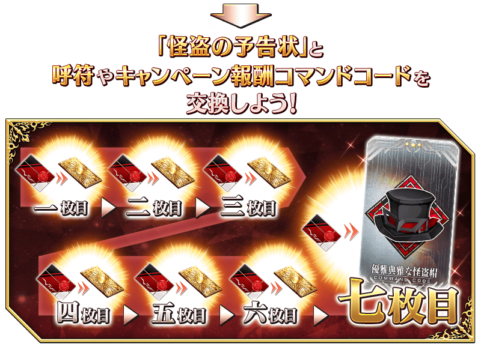
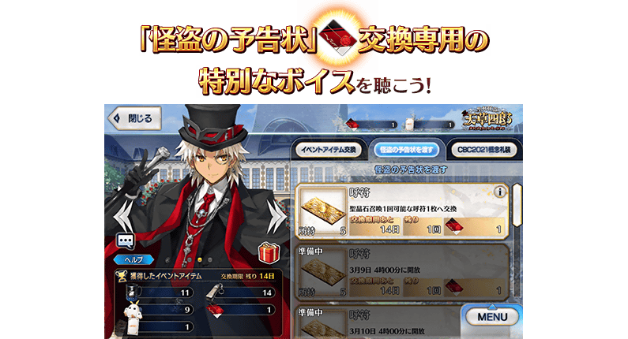
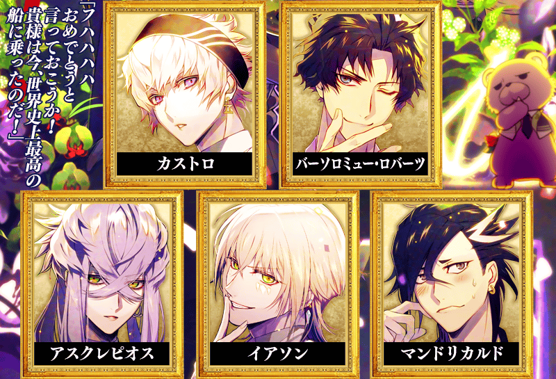
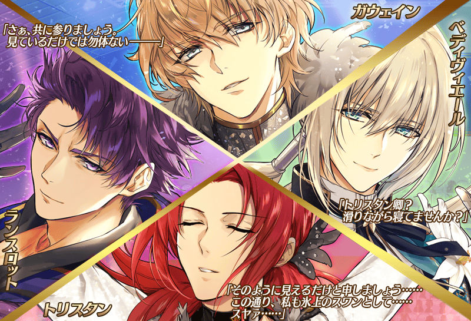
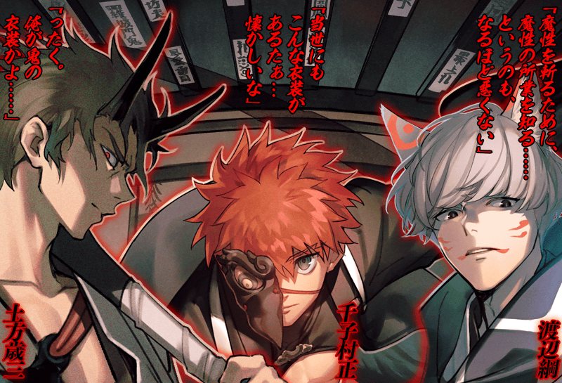
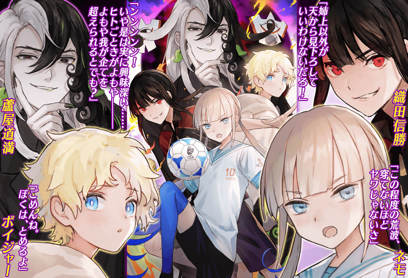
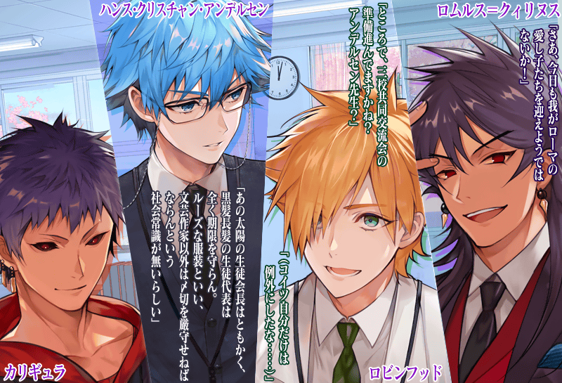
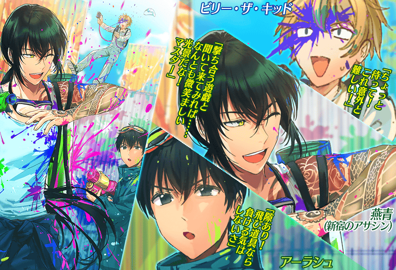
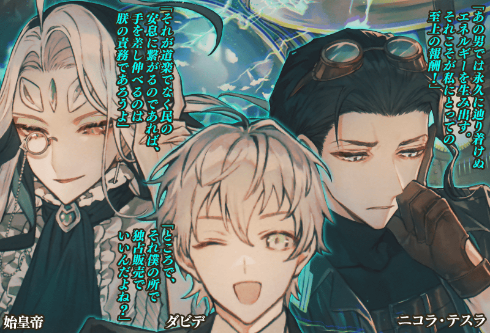

◆舉辦期間◆
2021年3月3日(三) 17:00～3月15日(一) 11:59
※請注意宣傳活動的舉辦期間與期間限定登入獎勵的「怪盗的預告狀」的領取期間有所差異。
※本頁面皆為開發中圖片。會有與實際圖片相異的情況。
◆有關從者真名的注意◆
在2018年12月31日(二) 23:00以後新配信的主線故事及期間限定活動、一部份關卡、宣傳活動及召喚中，會顯示隱藏真名的對象從者真名。
※2018年12月31日(一) 22:59前已經配信的主線故事、復刻活動、一部份關卡中不在此限。
在宣傳活動期間中登入的話，贈送可交換1張「迦勒底男性精選2021」期間限定概念禮裝的「CBC2021特別邀請函」！
宣傳活動期間中，可從交換對象概念禮裝之中選擇喜愛的1張交換！
◆宣傳活動舉辦期間◆
2021年3月3日(三) 17:00～3月15日(一) 11:59
※請注意「CBC2021特別邀請函」的領取只限上述期間。
◆概念禮裝交換期間◆
2021年3月3日(三) 17:00～3月22日(一) 11:59
※想用「CBC2021特別邀請函」交換贈送對象概念禮裝的話，必須在交換期間內推進至通過「特異點F 炎上汙染都市 冬木」並通過期間限定活動「聖杯怪盗天草四郎 ～鬧劇博物館～」第一節。
◆交換方法◆
2021年3月3日(三) 17:00～3月15日(一) 11:59之間，在最初進行登入時給予「CBC2021特別邀請函」至禮物箱。
從禮物箱領取「CBC2021特別邀請函」的話，自管理室(ターミナル)畫面右上的「道具交換」按鍵或達文西工房的「活動道具交換」，能從期間限定概念禮裝9張之中交換喜愛的1張。
※交換後的概念禮裝會送至禮物箱，「CBC2021特別邀請函」會消失。 ※請注意就算未交換的情況，在概念禮裝交換期間結束後「CBC2021特別邀請函」也會消失。
◆交換對象◆
在宣傳活動期間中登入的話，每天贈送一張「怪盗的預告狀」！
每天各收集一張依序領取報酬的話，靠第七張的交換得到宣傳活動報酬指令紋章「★3(R)優雅典雅な怪盗帽」！
期間中，每天登入來得到豪華報酬吧！
※請注意宣傳活動的舉辦期間與「怪盗的預告狀」的領取期間不同。
◆「怪盗的預告狀」的領取條件◆
・所有的御主對象
※新御主玩家必須推進到通過「特異點F 炎上汙染都市 冬木 第3節 進行度1」。
◆「怪盗的預告狀」與報酬的交換條件◆
・通過「特異點F 炎上汙染都市 冬木」
・通過期間限定活動「聖杯怪盗天草四郎 ～鬧劇博物館～」第一節
※收集七個可靠登入獎勵每天各入手一張「怪盗的預告狀」的話可獲得指令紋章。
◆「怪盗的預告狀」的領取期間◆
2021年3月8日(一) 3:00～3月15日(一) 2:59
※為了獲得指令紋章，期間中必須每天領取預告狀。
◆「怪盗的預告狀」的交換期間◆
2021年3月8日(一) 3:00～3月22日(一) 11:59
※交換期間結束後「怪盗的預告狀」會消失。
◆宣傳活動報酬指令紋章◆

|
★★★R |

| 登入時間 | 登入給予的道具 |
|---|---|
| 3月8日(一) 3:00～3月9日(二) 2:59 | 每天得到 一張 「怪盗的預告狀」！ |
| 3月9日(二) 3:00～3月10日(三) 2:59 | |
| 3月10日(三) 3:00～3月11日(四) 2:59 | |
| 3月11日(四) 3:00～3月12日(五) 2:59 | |
| 3月12日(五) 3:00～3月13日(六) 2:59 | |
| 3月13日(六) 3:00～3月14日(日) 2:59 | |
| 3月14日(日) 3:00～3月15日(一) 2:59 |

※各登入時間的期間內最多領取一張「怪盗的預告狀」。 ※請注意未於各登入時間的期間內登入的話無法領取「怪盗的預告狀」。 ※3月8日(一) 3:00～3月15日(一) 2:59的期間合計登入7天的話，可獲得宣傳活動報酬指令紋章「★3(R)優雅典雅な怪盗帽」。 ※請注意未領取所有七張「怪盗的預告狀」的情況，無法交換宣傳活動報酬指令紋章「★3(R)優雅典雅な怪盗帽」。 ※交換對象道具各只限領取1次。 ※交換對象道具最多能領取7次，根據「怪盗的預告狀」的持有數，可能無法到此上限。
「怪盗的預告狀」的交換方法
「怪盗的預告狀」的交換的交換可自管理室(ターミナル)畫面右上的「道具交換」按鍵或達文西工房的「活動道具交換」交換。
將「怪盗的預告狀」交給天草四郎來領取的報酬全部有7個，依序交付來領取下個報酬。
請注意最終未滿足七個「怪盗的預告狀」的話，無法領取所有的報酬。

為了記念「迦勒底男性精選2021」的舉辦，個人空間(マイルーム)以期間限定變成特別樣式！
與喜愛的從者一起享受茶會的模樣吧！
◆期間◆
2021年3月3日(三) 17:00～3月15日(一) 11:59
期間限定「迦勒底男性精選2021Pick Up召喚(每日交替)」的Pick Up對象從者做為期間限定活動「聖杯怪盗天草四郎 ～鬧劇博物館～」的自由關卡的支援從者以每日交替登場！
藉此機會享受中意從者的戰鬥動作和語音等！
◆舉辦期間◆
2021年3月3日(三) 17:00～3月15日(一) 11:59
【對象從者】
| 職階 | 稀有度 | 從者名 |
|---|---|---|
| Saber | ★★★★★ | 狄奧斯庫洛伊 |
| Archer | 阿周那 | |
| 拿破崙 | ||
| 尼古拉・特斯拉 | ||
| Lancer | 恩奇杜 | |
| 迦爾納 | ||
| Rider | 阿基里斯 | |
| 奧茲曼迪亞斯 | ||
| 奧德修斯 | ||
| 尼莫 | ||
| Caster | 諸葛孔明〔艾梅洛Ⅱ世〕 | |
| Assassin | 李書文 | |
| Berserker | 弗拉德三世 | |
| 庫・夫林〔Alter〕 | ||
| 項羽 | ||
| Ruler | 天草四郎 | |
| Foreigner | Voyager |
※3月10日(三) 17:00修正
【每日交替時間表】
| 每日交替支援從者 | 登場期間 |
|---|---|
| ★5(SSR)天草四郎 |
2021年3月3日(三) 17:00～ 3月5日(五) 22:59 |
|
★5(SSR)狄奧斯庫洛伊 ★5(SSR)項羽 |
2021年3月5日(五) 23:00～3月6日(六) 22:59 |
|
★5(SSR)拿破崙 ★5(SSR)奧德修斯 |
2021年3月6日(六) 23:00～3月7日(日) 22:59 |
|
★5(SSR)諸葛孔明〔艾梅洛Ⅱ世〕 ★5(SSR)弗拉德三世(Berserker) |
2021年3月7日(日) 23:00～3月8日(一) 22:59 |
|
★5(SSR)阿周那 ★5(SSR)尼莫 |
2021年3月8日(一) 23:00～3月9日(二) 22:59 |
|
★5(SSR)迦爾納(Lancer) ★5(SSR)奧茲曼迪亞斯 |
2021年3月9日(二) 23:00～3月10日(三) 22:59 |
|
★5(SSR)尼古拉・特斯拉 ★5(SSR)恩奇杜 |
2021年3月10日(三) 23:00～3月11日(四) 22:59 |
|
★5(SSR)阿基里斯 ★5(SSR)庫・夫林〔Alter〕 |
2021年3月11日(四) 23:00～3月12日(五) 22:59 |
|
★5(SSR)李書文(Assassin) ★5(SSR)Voyager |
2021年3月12日(五) 23:00～3月13日(六) 22:59 |
|
★5(SSR)天草四郎 ★5(SSR)Voyager |
2021年3月13日(六) 23:00～ 3月15日(一) 11:59 |
※3月10日(三) 17:00修正
在「Fate/Grand Order」官方網站內的公告中公開了使用「迦勒底男性精選2021」期間限定概念禮裝的插圖來配布Twitter圖示及置頂圖片。
下述的期間，按下在「Fate/Grand Order」官方網站內的公告各圖片下方顯示的按鍵即可下載保存使用。
◆配發期間◆
2021年3月3日(三) 17:00～3月15日(一) 11:59








在達文西工房的「稀有稜鏡交換」永久追加『「CBC2020」限定 概念禮裝交換商店』。
交換『「CBC2020」限定 概念禮裝交換商店』的話，贈予至「CBC2020特別邀請函」禮物箱。
「CBC2020特別邀請函」可自管理室(ターミナル)畫面右上的「道具交換」鍵或達文西工房的「活動道具交換」內的「迦勒底男性精選2020」，交換1張「CBC2020」限定的概念禮裝1張。
※想用「CBC2020特別邀請函」交換概念禮裝的話，必須推進至通過「特異點F 炎上汙染都市 冬木」。
◆追加時間◆
2021年3月3日(三) 17:00～
◆追加道具(永久)◆
| 追加道具 | 能交換次數 | 1次交換所需的 稀有稜鏡數 |
|---|---|---|
| 「CBC2020」限定 概念禮裝交換商店 | 1次 | 3個 |
※在「稀有稜鏡交換」追加的『「CBC2020」限定 概念禮裝交換商店』為永久，沒有交換期限。 ※請注意舉辦「迦勒底男性精選2020」時，有使用過「CBC2020特別邀請函」交換禮物履歴的情況，無法於達文西工房的「稀有稜鏡交換」交換。
期間限定活動「聖杯怪盗天草四郎 ～鬧劇・博物館～」中，、身穿靈衣的天草四郎登場。
收集活動道具集的話可入手天草四郎的靈衣開放權。
並且，天草四郎除了戰鬥動作及寶具演出翻新外，也追加強化關卡。
關於詳情，請自下述的橫幅確認。
◆活動舉辦期間◆
2021年3月3日(三) 17:00～3月15日(一) 11:59

【3月10日(三) 17:00追記】
其他還有，
・迦勒底男性精選2021Pick Up召喚(每日交替)
・迦勒底男性精選2021Pick Up3召喚
以期間限定舉辦中！
關於詳情，請自下述橫幅確認。
■「迦勒底男性精選2021Pick Up召喚(每日交替)」詳細情報

■「迦勒底男性精選2021Pick Up召喚3」詳細情報